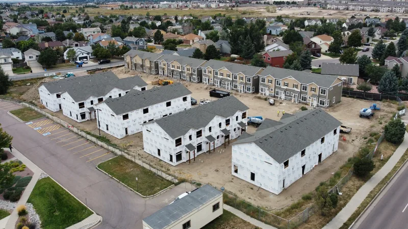

Siding is done when the trouble is coming from behind it, not just showing on its face. A cracked panel by the garage door is a repair. A soft wall, paint peeling on an inside wall and mildew that keeps creeping out of the seams all mean water is getting past the siding, and keeping water out is the whole job.
Here are six signs to look for, starting with the ones you can see from the yard and ending with the ones that need a screwdriver.
1. Cracks and holes that keep multiplying
Vinyl gets brittle as it ages, and a cold morning plus a stray baseball can crack it. One or two cracked panels can be swapped out. When cracks are spreading across a whole wall, or fresh ones turn up every year, the siding has lost its give.
Look hardest at the bottom rows and around the hose spigot. That's where string trimmers and gravel thrown from the driveway do their damage.
2. Warping, buckling or a wall that waves
Stand at one corner of the house and sight down the wall. Lap siding should run in straight lines. Waves, or panels pulling apart at the seams, usually come from one of two causes. Either the siding was nailed too tight to move with the heat, or the wall behind it has gone out of line from moisture. The first can sometimes be fixed by refastening. The second is a bigger job, because the cause sits behind the siding.

3. Soft spots when you press on it
Take a screwdriver and press the tip gently into the siding and trim at the bottom of the wall, under the windows and anywhere a roof edge meets a wall. Wood and fiber cement should feel hard. If the tip sinks in, or the board feels spongy, there's rot.
With vinyl, press on the panel itself. If the wall behind it gives, the sheathing under the siding may be soft.
4. Paint or wallpaper peeling inside
This one catches people off guard. Paint bubbling or peeling on an inside wall that faces outdoors, or wallpaper lifting at the seams there, can mean water is getting through the siding and into the wall. Check behind furniture along outside walls and inside closets on that side of the house, where nobody looks.
5. Mildew or stains coming from behind
A little green on a shady north wall is normal in a humid climate, and it washes off. Staining that seeps out of the seams is something else. So is a streak running down from the bottom edge of a panel, or mildew that's back a few weeks after you scrub it. Those tell you moisture is living behind the siding.
6. A repair bill every spring
Add up what you've spent on siding over the last few years: a panel here, a stretch of rotten trim there. When the same walls need fixing year after year, you're paying to put off a replacement.
Our opinion: once you're patching the same wall for the second spring in a row, stop. Get a price for re-siding that wall, or the house, and set it next to what the patches have cost you.

What to do next
If you found one sign on one wall, it's probably a repair. Repair or replace siding helps you tell the difference, including the headache of matching old vinyl that has faded.
If you found three or four signs, or any rot at all, it's time to price a replacement. Our siding page covers the siding we work with. A replacement is also your chance to rethink color, and matching roof, siding and trim colors walks through how to pick. If you're still choosing a material, vinyl siding pros and cons lays out where vinyl does well in a humid climate and where it doesn't.
Questions
Can I replace the siding on just one side of the house?
Often, yes, especially the side that takes the most weather. The catch is matching. Older siding fades, so the replaced side may not match the rest exactly.
Should soft sheathing be fixed before new siding goes on?
Yes. Covering a rotten wall with new siding hides the problem and gives the rot a fresh place to keep spreading.